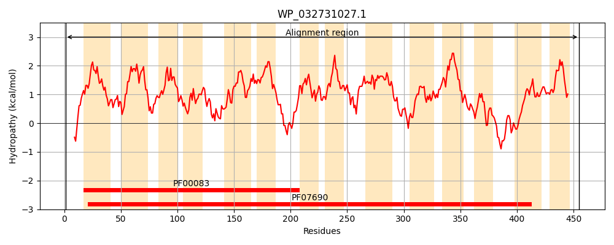
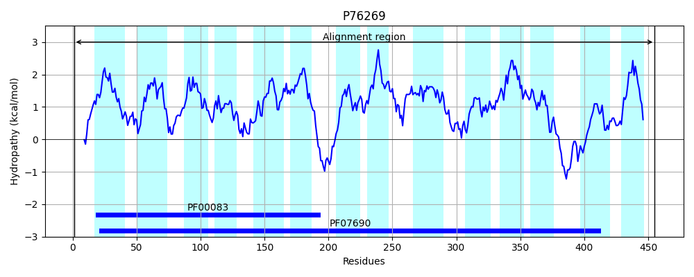
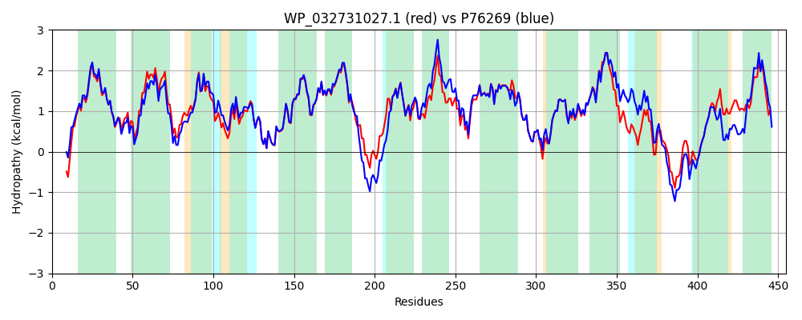

Hit Accession: P76269
Hit TCID: 2.A.1.3.17
Hit Description: gnl|BL_ORD_ID|11455 gnl|TC-DB|P76269|2.A.1.3.17 Hypothetical transport protein yebQ - Escherichia coli.
Mach Len: 455
e:0.000000
Query TMS Count : 14
Hit TMS Count: 14
TMS-Overlap Score: 14.000000
Predicted Substrates:CHEBI:9731;trimethoprim
BLAST Alignment:
Score: 1882 , Bit scores: 729 bits, E-value: 0.0e+00, Alignment length: 455, Percentage identity: 80
Query: 1 MDKNSSDGVPLPQRYGAILTIVLGLTMAVLDGAIANVALPTIASDLNASPAASIWIVNAYQIAIVIALLPLSFLGDMVGYRRIYKIGLVVFIFTSLACALSRSLDMLTFARVAQGLGGAALMSVNTALIRLIYPQRFLGRGMGINSFVVAVSSAAGPTIAAAILSLASWQWLFLINVPLGIVAFVLAMRFLPPNSARSKIIRFDLPSAIMNALTFGLLITALSGFAQGQSVQLVLAEVAAMLVVGFFFVRRQLSMPVPLLPVDLLRIPLFSLSICTSICSFCAQMLAMVSLPFFLQTMMGRSEVETGLLLTPWPLATMVMAPLAGYLIEKCHAGLLGAIGLLVMACGLFGLALLPESPSDLDIIWRMALCGAGFGLFQSPNNHTIVASAPSHRSGGASGMLGTARLLGQSTGAALVALLFNLLGNSGTHTALLLAGILATVAALISGLRVTQPRA 455
M K +DG+PLPQRYGAILTIV+G++MAVLDGAIANVALPTIA+DL+A+PA+SIW+VNAYQIAIVI+LL SFLGDM GYRRIYK GLVVF+ +SL CALS SL MLT ARV QG GGAALMSVNTALIRLIYPQRFLGRGMGINSF+VAVSSAAGPTIAAAILS+ASW+WLFLINVPLGI+A +LAMRFLPPN +R+ RFDLPSA+MNALTFGLLITALSGFAQGQS+ L+ AE+ M+VVG FF+RRQLS+PVPLLPVDLLRIPLFSLSICTS+CSFCAQMLAMVSLPF+LQT++GRSEVETGLLLTPWPLATMVMAPLAGYLIE+ HAGLLGA+GL +MA GLF L LLP SP+D++IIW M LCGAGFGLFQSPNNHTI+ SAP RSGGASGMLGTARLLGQS+GAALVAL+ N G++GTH +L+ A ILA +AA +SGLR+TQPR+
Sbjct: 1 MPKVQADGLPLPQRYGAILTIVIGISMAVLDGAIANVALPTIATDLHATPASSIWVVNAYQIAIVISLLSFSFLGDMFGYRRIYKCGLVVFLLSSLFCALSDSLQMLTLARVIQGFGGAALMSVNTALIRLIYPQRFLGRGMGINSFIVAVSSAAGPTIAAAILSIASWKWLFLINVPLGIIALLLAMRFLPPNGSRASKPRFDLPSAVMNALTFGLLITALSGFAQGQSLTLIAAELVVMVVVGIFFIRRQLSLPVPLLPVDLLRIPLFSLSICTSVCSFCAQMLAMVSLPFYLQTVLGRSEVETGLLLTPWPLATMVMAPLAGYLIERVHAGLLGALGLFIMAAGLFSLVLLPASPADINIIWPMILCGAGFGLFQSPNNHTIITSAPRERSGGASGMLGTARLLGQSSGAALVALMLNQFGDNGTHVSLMAAAILAVIAACVSGLRITQPRS 455 | Protein Hydropathy Plots: |
|---|
|  |  |
Pairwise Alignment-Hydropathy Plot:
|
|---|
|  |